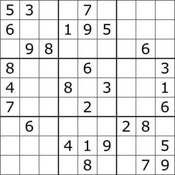
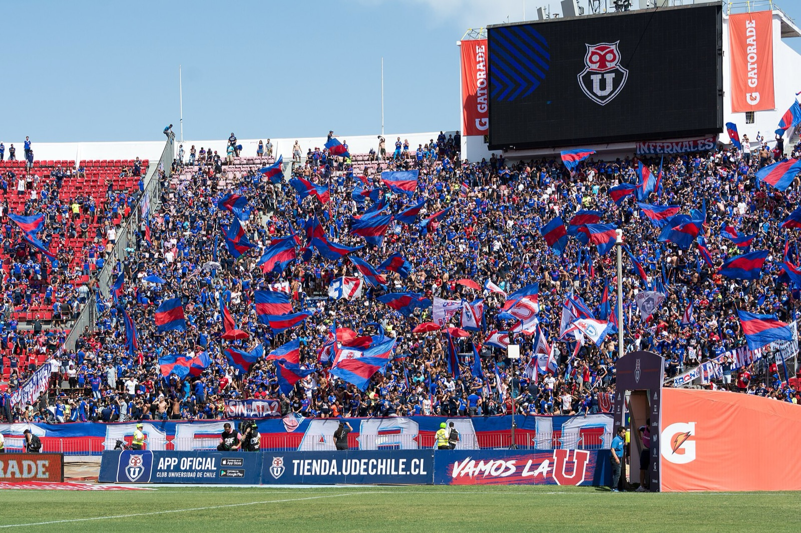
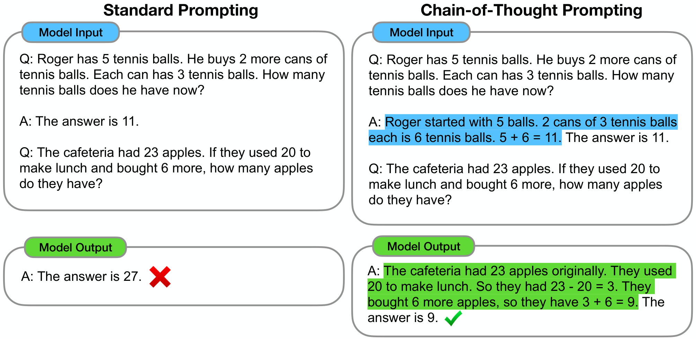

¿Cómo razona una máquina, y cómo sabemos si razonó bien?
Un solver
Encuentra una solución que cumple todas las restricciones del problema, o demuestra que no existe
Exacto y con garantías, pero solo resuelve lo que le escribimos en su lenguaje
Un LLM
Razona generando pasos intermedios en lenguaje natural
Flexible y fácil de usar, pero sin garantía de que la respuesta sea correcta
El caso de hoy · MantenIA
Los turnos del equipo de mantenimiento
Electricistas reparan un generador en la central de Wolf Creek, EE. UU. Foto: Mark Rankin, U.S. Army Corps of Engineers (2013), Wikimedia Commons, CC BY 2.0.
4 técnicos · 3 días · turno de día y de noche. ¿Quién trabaja cada turno?
Lun
Mar
Mié
día
noche
día
noche
día
noche
Ana✓ cert.
Marta✓ cert.
Luiscert. vencida
Jorgeen formación
Ana y Marta tienen la certificación vigente. La de Luis venció, como vimos en el Laboratorio 2C, y Jorge está en formación.
Restricciones · el modelo
Anatomía de un modelo de restricciones
Variables
Las preguntas que hay que responder
¿Ana trabaja el lunes de noche?
24 preguntas: 4 técnicos × 3 días × 2 turnos
Dominios
Las respuestas posibles de cada pregunta
sí (1) o no (0)
En otros problemas: horas, salas, montos
Restricciones
D1 cada turno tiene al menos un técnico
D2 un solo turno por día
D3 quien trabaja de noche descansa al día siguiente
D4 cada noche, al menos un certificado
Objetivo
B1 Marta pidió no trabajar el miércoles
B2 ningún turno de más
B3 repartir la carga lo más parejo posible
El modelo describe el problema; no dice cómo resolverlo. Eso lo hace el solver.
Restricciones · dos tipos
Restricciones duras y blandas
Duras
Blandas
Qué son
Reglas que se cumplen siempre
Preferencias, con un peso que dice cuánto importan
Si no se pueden cumplir
No hay solución: el solver lo demuestra
El solver las cumple tanto como pueda
En MantenIA
Descanso, certificación, cobertura
Marta (peso 10), turnos de más (3), carga pareja (2)
En otras organizaciones
Descanso legal, aforo de una sala, presupuesto máximo
Preferencias de horario, equidad, costo
Decidir qué es duro y qué es blando es una decisión de negocio, no técnica.
Cómo resuelve un solver
Buscar y propagar

Sudoku. Tim Stellmach, a partir de Lawrence Leonard Gilbert (2017), Wikimedia Commons, CC0.
Elegir un hueco y probar un valor
Propagar: borrar de los otros huecos los valores que ya no caben
Si un hueco se queda sin opciones, retroceder y probar otro valor
CP-SAT combina esta idea con técnicas de los solvers lógicos, como aprender de cada conflicto para no repetirlo
CP-SAT · el resultado
Qué garantiza, y qué no
Lun
Mar
Mié
día
noche
día
noche
día
noche
Ana✓ cert.
2
Marta✓ cert.
2
Luiscert. vencida
1
Jorgeen formación
1
turno de díaturno de nochea la derecha: turnos de cada técnico
OPTIMAL6 turnos · Marta libre el miércoles · carga 2-2-1-1
Garantiza
Que la solución cumple todas las reglas duras y que es la mejor según el objetivo. O, si no hay solución, que de verdad no existe
No garantiza
Que el modelo refleje la realidad: una regla que olvidamos escribir, el solver la viola sin avisar
Cuando las reglas chocan
Infactibilidad y relajación
D4'Nueva regla de seguridad: cada noche, dos técnicos certificados
D5Nueva regla de descanso: nadie trabaja dos noches seguidas
CP-SAT · INFEASIBLE
No hay solución. Chocan D4' y D5: solo Ana y Marta están certificadas, así que las dos tendrían que trabajar todas las noches
Dos formas de relajar, y su costo:
a · Volver a un certificado
Lun
Mar
Mié
D
N
D
N
D
N
Ana
Marta
Luis
Jorge
Hay turnos con 6 asignaciones, pero la regla de seguridad no se cumple
b · Permitir noches seguidas
Lun
Mar
Mié
D
N
D
N
D
N
Ana
Marta
Luis
Jorge
Ana y Marta trabajan tres noches seguidas: 9 asignaciones y más fatiga
Relajar una regla es una decisión de negocio: el solver dice qué chocan; usted decide qué ceder.
Caso real · Chile, desde 2005
El calendario del fútbol chileno, con optimización

Universidad de Chile frente a Unión Española, Estadio Nacional, 2019. Foto: Carlos Figueroa Rojas, Wikimedia Commons, CC BY-SA 4.0.
Desde 2005, la liga profesional programa sus partidos con un modelo de optimización (Universidad de Chile)
Reglas: viajes, clásicos, equilibrio de local y visitante, televisión
Apertura 2006 frente a 2004: +32 % de asistencia y +102 % de taquilla, aunque los autores advierten que influyen otros factores
Hasta 2016: más de 50 torneos y un impacto estimado de US$59 millones
Antes de comparar
API, tokens y costo
Un ejemplo real: en el Laboratorio 2B, las 14 llamadas a Claude Haiku 5.5 costaron US$0,0042. Los precios se dan por millón de tokens, y la salida cuesta más que la entrada.
Cómo razona un LLM
Cadena de pensamiento

Respuesta directa frente a cadena de pensamiento. Wei et al. (2022), NeurIPS, Fig. 1, arXiv:2201.11903, CC BY 4.0.
Pedir, o mostrar con ejemplos, los pasos intermedios antes de la respuesta
Con 8 ejemplos así, un modelo de 540 mil millones de parámetros alcanzó el mejor resultado de su momento en problemas matemáticos escritos (GSM8K)
Los pasos se leen como un razonamiento, pero nadie los verifica
Cómo razona un LLM
Modelos de razonamiento: pensar más antes de responder
El modelo escribe una cadena larga, a veces oculta, antes de responder: más cómputo en el momento de usarlo
Esos tokens se cobran como tokens de salida y aumentan la espera
Varias cadenas, árboles de pensamientos, cómo se entrenan y hasta dónde llegan: en la charla de cierre
Para el laboratorio
Vibe coding: programar describiendo
«Hay un nuevo tipo de programación que llamo vibe coding, en el que te entregas por completo a las vibras […] y olvidas que el código siquiera existe».Andrej Karpathy, 2 de febrero de 2025. Traducción propia.
Collins la eligió palabra del año 2025: usar inteligencia artificial, guiada con lenguaje natural, para escribir código.
Para el laboratorio
Cómo pedirle el programa, y cómo verificarlo
instrucción para el asistente de IA
Escribe un programa en Python que asigne
los servicios de mi empresa al personal.
Variables: quién hace cada servicio y a qué hora.
Reglas que siempre se cumplen: …
Preferencias, con su peso: …
Objetivo: …
Usa el solver CP-SAT. Al final, revisa cada
regla e imprime si se cumple.
Antes de confiar en el programa
Pídale que liste las reglas que programó y compárelas con las suyas
Pruébelo con un caso pequeño que pueda revisar a mano
Provoque un caso imposible: ¿lo detecta?
Un programa que corre no es un programa correcto
Síntesis
Lo que nos llevamos de esta charla
Modelo
variables, dominios, restricciones y objetivo
Solver
la mejor solución, o la prueba de que no hay
LLM
pasos en lenguaje natural, sin garantía; más pasos, más costo
Juntos
la IA escribe el programa, el solver resuelve y usted verifica
A continuación · 60 min
Laboratorio 3A · Vibe coding La logística de una empresa de aseo
En parejas, describan a un asistente de IA el problema de programar los servicios de una pequeña empresa de aseo, pídanle un programa que lo resuelva con un solver y pónganlo a prueba con casos que puedan revisar a mano.
60 minutos, en parejasSin escribir código a mano: se describe y se verificaAsistente de IA en VS Code
Durán, G., Guajardo, M., Miranda, J., Sauré, D., Souyris, S., Weintraub, A. y Wolf, R. (2007). Scheduling the Chilean soccer league by integer programming. Interfaces 37(6), 539–552. DOI 10.1287/inte.1070.0318 · INFORMS (copia en Wayback Machine) · PDF
Alarcón, F., Durán, G., Guajardo, M. et al. (2017). Operations research transforms the scheduling of Chilean soccer leagues and South American World Cup qualifiers. Interfaces 47(1), 52–69. DOI 10.1287/inte.2016.0861 · INFORMS (copia en Wayback Machine)
Rossi, F., van Beek, P. y Walsh, T. (eds.) (2006). Handbook of Constraint Programming. Elsevier. Editorial
Russell, S. y Norvig, P. (2021). Artificial Intelligence: A Modern Approach, 4.ª ed., cap. 6, «Constraint Satisfaction Problems» (cap. 5 en la edición global). Contenido
Poole, D. y Mackworth, A. (2023). Artificial Intelligence: Foundations of Computational Agents, 3.ª ed., cap. 4, «Reasoning with Constraints». Texto abierto
Wei, J. et al. (2022). Chain-of-thought prompting elicits reasoning in large language models. NeurIPS 2022, 24824–24837. NeurIPS · arXiv
Karpathy, A. (2025, 2 de febrero). «There's a new kind of coding I call "vibe coding"…». Publicación en X. X · copia en Wayback Machine
Collins (2025, 6 de noviembre). Collins' Word of the Year 2025: AI meets authenticity as society shifts. Blog de Collins
Anthropic (2026). Pricing y Building with extended thinking. Documentación de la API de Claude, consultada el 26 de octubre de 2026. Precios · Razonamiento
.jpg){kind=link}